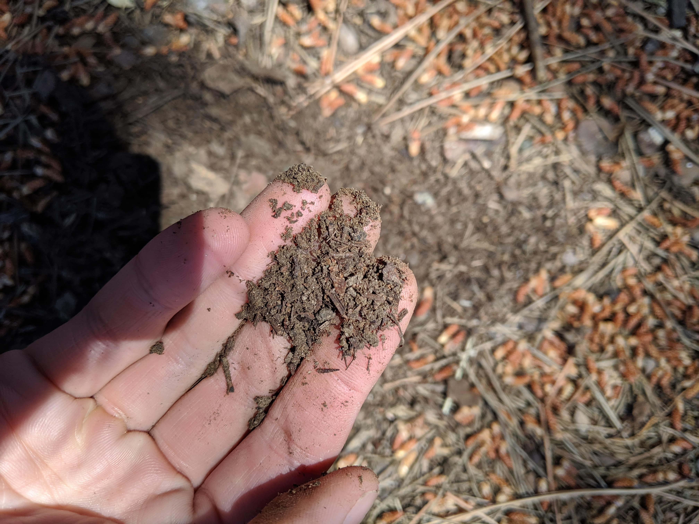
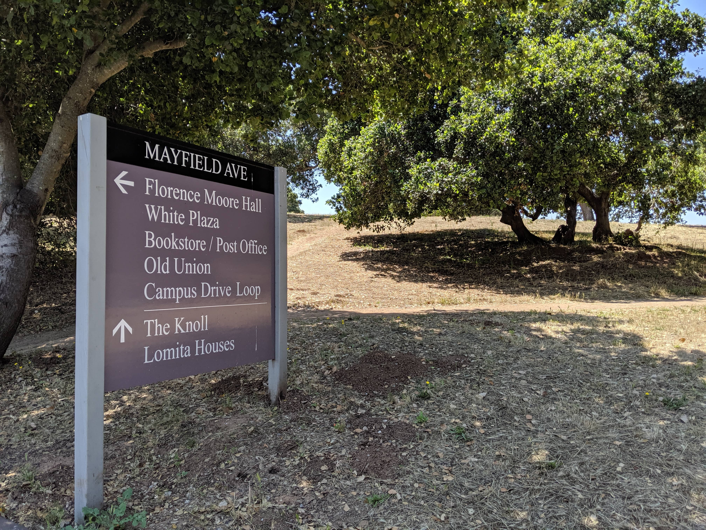

Soil is ubiquitous; every day we walk over dozens of different soil profiles and types, and pass through the different plants, animals, and rocks that contribute to our soil without noticing. It can seem like the only people who care about soil types are earth scientists and farmers. However, soil contains valuable information about the environment, if we just know how to read it. This guided tour of the soils in Stanford's southern campus aims to provide a sense of what soil can teach us.
With that, let's get going!
Warning: this walking tour involves getting at least one of your hands a bit dirty.
This tour doesn't require any materials (the dirt around us is plentiful and full of information!). However, there are a few optional materials that we'll use for certain parts of the tour, listed below.
Our tour starts at Levin Field, the green patch of grass next to the Flomo basketball courts.
First things' first: find yourself a nice digging stick. We'll be doing a lot of digging on this tour, so get a long, sturdy twig, like this one:
Or this one:
Let's start by looking at the soil on the grassy side of the walkway. Dig into the dirt until you get enough dirt to pinch in your hand.
Texture is one of the primary ways of quickly identifying soil type. Feel the dirt in your hand. Rub your fingers together- does the soil stick to itself and form a short ribbon?
This dirt should feel rich and fluffy and be dark in color. These are all signs that it is loam: a soil compound that is rich in nutrients. Think of loam as something similar to potting soil you would buy from Home Depot- it's fluffy and nutrient-rich.
However, this soil should also form small ribbons and stick to itself when you roll it between your fingers. It should feel the tiniest bit sticky on your hand. This is a sign that it contains clay: the type of soil with the smallest particles, which stick together tightly and don't let much water pass through.
The soil in this field is most likely clay-loam: mostly loam, with a bit of clay content.
If you want to read a bit more about different soil types, check out this basic guide.
Now let's cross over to the other side of the walkway, near the pines tree. Walk near one of the pine trees and dig up some of the soil.
Immediately, what do you notice that's different? How does the soil look, feel, and even sound?

This dirt is much lighter in color- an indicator that there's less organic matter (rotting leaves, dead bits of plant matter, etc.). Rub it between your fingers. It should feel a bit gritty and not clump up at all the way the clay-loam did.
This soil is far more sandy: with larger, grittier particles, sandy soil lets water pass through very quickly and does not hold much moisture. This makes sense, given what's growing here; pine trees actually prefer drier soil, so a sandy soil that lets water through is perfect for them.
Why are two patches of earth so close to each other so different in soil? The answer may seem obvious: it depends on what grows there. Pine trees prefer well-drained, sandy soil. Green meadow grass, meanwhile, prefers nutrient-dense loam. However, the loam isn't necessarily naturally-occuring. The loam you dug on the grassy side may have come with the grass, if the lawn was created using mats of existing grass. It could also be well-fertilized.
We'll see more ways that surroundings can impact soil type. Before you leave, don't forget to replace the soil that you've dug! Exposed soil is more likely to erode, and holes in the ground (even small ones) can hurt small animals that run over them.
Grab your stick and let's get going.
Mayfield Ave
Head back toward Mayfield avenue and walk toward Flomo.
We're headed toward the entrance to Lake Lag, so we'll go down the length of Mayfield.
As you walk, look at the base of the bloodleaf trees (on your right).
You may notice that the soil here looks really dry and it hardened into large chunks, like this:
The way the soil is sticking together like this suggests that it has high clay content. Just like a ball of play-dough drying if it's left out too long, clay-y soil will dry into large clumps. If you crumble one of these blocks in your fingers, the dirt should feel very fine, almost like a dust.
As you walk under the shade of some trees, look again at the bloodleaf trees. Depending on the time of day, they may be in the shade too.
Look at the soil here. It should be darker, much more similar to the dirt you found in the grass before.
Why do you think this is?
We know that loam contains more organic matter. These bloodleafs, even though they're the same as their neighbors just a few feet away, are underneath pines that continually shed their needles. It's likely that all this plant matter enriches the soil here more than the soil you saw just a minute ago.
Pretty cool!
Keep walking until Mayfield intersection wtih Capistrano; cross the street here.
Walk until you see a little break in the bushes, behind the cream-colored building.
Walk through until you see a bench.
Dig the soil right in front of the bench. Try the texture test we did earlier, rolling it in your fingers. If the soil forms little worm shapes and can hold it without breaking, it likely has clay content.
As you can see, this soil has a pretty high clay-content; this would be a silty clay.
Lake Lag
We'll continue down Mayfield until we reach Lake Lag.
Take the short foot path behind this sign, up to the fire pit.

If it's a hot day, here is a good place to rest! There are a few benches in the shade.
Now's a good time to point out of the wildlife that dirt can show us. In Levin field and now in the lake area, you may have noticed several piles of dirt laying around, like these:
Or holes, like these:
These are signs of gophers and ground squirrels. The piles are the entrances to gopher tunnels that have been plugged up; gophers seal their tunnel entrances so they can live underground. Meanwhile, ground squirrels keep the entrances to their burrows open, resulting in the large holes you see around.
If you stay a while, you might see a ground squirrel go into its home.
If you don't have time for that, here's a video of one I spotted:
There's an interesting type of soil at the edge of this lake. To find it, continue down the lake path on the left fork for a little bit.
Find this little concrete ledge and sit down.
Right where your feet land, dig a little with your stick. The dirt should be dry and hard but dark underneath. What kind of dirt do you think this is?
Sometimes it can help to wet dirt to get a better sense of what type it is. If you have water with you, try pouring a little bit into the soil and rubbing it between your fingers.
This should feel familiar. It's clay, with a bit of sand.
If it's nice out, now would be a good time to take in the lake view.
Since this is such a scenic spot, now seems like a good time to give you a new tool for describing soils: Munsell Soil charts.
Beyond "Brown"
How would you describe the color of this soil? While it may be tempting to just call it "brown,” there is actually a far more precise way to describe its color.
Scientists, archaeologists, and even carpet manufacturers use something called the Munsell System to describe soil colors. The Munsell System measures hue (color), value (lightness and darkness), and chroma (color intensity) of a soil and translates it to a unique code that can universally identify the soil color. Knowing the Munsell notation of a bit of soil can help scientists understand its composition, help archaeologists track changes in soil profile during an excavation, and even help carpet manufacturers match the exact shade of outside dirt so that dirty footprints are less visible indoors.
You can easily find the Munsell code of an area of dirt by placing a Munsell card over the dirt and matching the color up to the card, like a paint chip. Let's try Munsell-ing this dirt with some digital help. Follow the directions below.
Open the HP Reveal App
Clear a spot on the ground so that only dirt is visible
Place the reference card given to you over this spot so that it forms an upper left corner.
Using HP Reveal, scan the reference card. An image of a Munsell card should appear
Find the color swatch that matches the dirt showing through the circular holes. Note the row and column numbers of your dirt- this is your Munsell code
Munsell colors help not only by creating a universal standard for soil color, but by giving information about the soil content (and about iron minerals in particular). For example, dirt that matches 10YR 8/6 ("yellow") is known to have bits of geothite about 1-2 microns wide. Meanwhile, soil matching 10YR 8/3 ("very pale brown") is known to have bits of gypsum.
This information is from this pdf on Munsell types, which has more detailed information on mineral content.
The Knoll Path
Let's keep moving toward our last stop. Go back to the sign you passed earlier and continue striaght to go toward the knoll.
As you walk, notice that the dirt on your right is buried in dead leaves. What do you think the dirt underneath will be like? You can dig just to check.
Rich, brown, fluffy; better than Home Depot.
Keep walking until you see this sign, and take the right fork.
When you see signs for the Knoll, keep going straight:
Until you see this little paved path.
If you follow the path for a little while, you'll see this bad boy on your right.
At this point you know what clay feels like versus loam versus sand versus silt. You know that pines like dry dirt and grass likes a nutrient-rich mix, that dead leaves mean dark dirt, that big clumps of dried dirt can be rolled into worms if they're wet.
But what happened here? It looks like a pine stump with clumps of clay-like dirt. Not what we'd expect from pines.
At this point you know enough about soil types and plant like to come up with your own hypotheses. Something to think about as you walk back to Levin field.
Thus concludes our soil tour of southern Stanford! If you continue straight down the path and turn left, you'll make your way to Campus Drive, which you can follow back to Mayfield and Levin field. As you walk, listen for the rustling of ground squirrels scurrying into their burrows. And feel free to Munsell any interesting soil you pass on your way back. :)
 The way the soil is sticking together like this suggests that it has high clay content. Just like a ball of play-dough drying if it's left out too long, clay-y soil will dry into large clumps. If you crumble one of these blocks in your fingers, the dirt should feel very fine, almost like a dust.
The way the soil is sticking together like this suggests that it has high clay content. Just like a ball of play-dough drying if it's left out too long, clay-y soil will dry into large clumps. If you crumble one of these blocks in your fingers, the dirt should feel very fine, almost like a dust. Look at the soil here. It should be darker, much more similar to the dirt you found in the grass before.
Look at the soil here. It should be darker, much more similar to the dirt you found in the grass before. 
 At this point you know what clay feels like versus loam versus sand versus silt. You know that pines like dry dirt and grass likes a nutrient-rich mix, that dead leaves mean dark dirt, that big clumps of dried dirt can be rolled into worms if they're wet.
At this point you know what clay feels like versus loam versus sand versus silt. You know that pines like dry dirt and grass likes a nutrient-rich mix, that dead leaves mean dark dirt, that big clumps of dried dirt can be rolled into worms if they're wet.